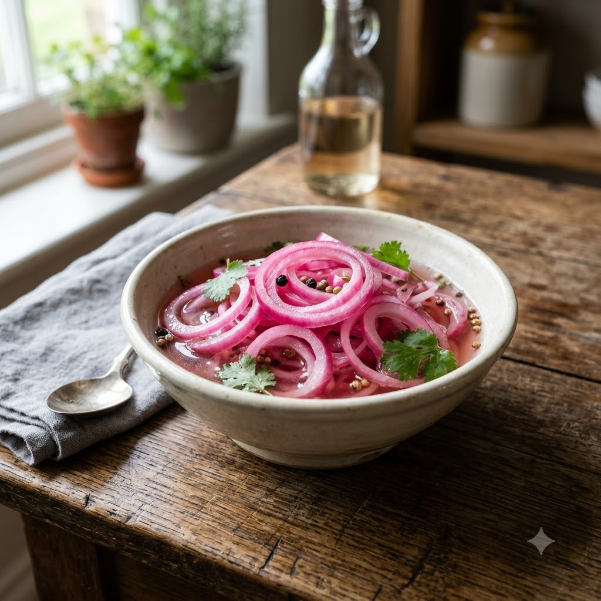

Quick Pickled Onions

Quick Pickled Onions
No-Cook — 5 min + 20 min rest — makes ~1 cup
Gluten-Free • Vegan • No-Cook • Everyday
Prep ahead: Best made at least 20 minutes ahead so the onions soften and turn pink.
Ingredients
- 1 large red onion, thinly sliced
- 2 tbsp lemon juice or vinegar
- 1/2 tsp sugar
- 1/4 tsp salt
- A pinch of chilli powder (mirch powder) or beetroot juice for colour (optional)
Method
1Toss the sliced onion with lemon juice, sugar and salt.
2Rest for at least 20 minutes, tossing once or twice, until softened and lightly pink.
3Serve alongside kebabs, tikka, biryani or grilled fish.